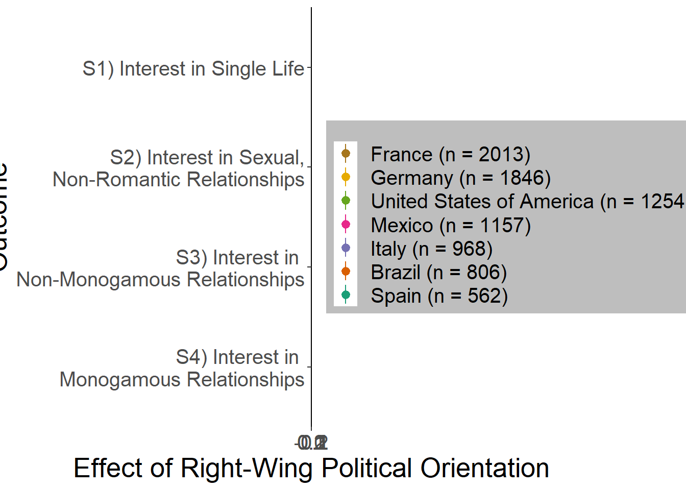

Here, we report on our results on Preferred Relationship Options
including Interest in Single Life; Interest in Sexual, Non-Romantic
Relationships; Interest in Non-Monogamous Relationships; and Interest in
Monogamous Relationships
Library
library(formr)
library(effects)
## Lade nötiges Paket: carData
## lattice theme set by effectsTheme()
## See ?effectsTheme for details.
library(effectsize)
library(lme4)
## Lade nötiges Paket: Matrix
##
## Attache Paket: 'sjstats'
## Die folgenden Objekte sind maskiert von 'package:effectsize':
##
## cohens_f, phi
## Das folgende Objekt ist maskiert 'package:formr':
##
## props
##
## Attache Paket: 'lmerTest'
## Das folgende Objekt ist maskiert 'package:lme4':
##
## lmer
## Das folgende Objekt ist maskiert 'package:stats':
##
## step
##
## Attache Paket: 'dplyr'
## Die folgenden Objekte sind maskiert von 'package:formr':
##
## first, last
## Die folgenden Objekte sind maskiert von 'package:stats':
##
## filter, lag
## Die folgenden Objekte sind maskiert von 'package:base':
##
## intersect, setdiff, setequal, union
library(ggplot2)
library(RColorBrewer)
library(tidyverse)
## ── Attaching core tidyverse packages ──────────────────────── tidyverse 2.0.0 ──
## ✔ forcats 1.0.0 ✔ stringr 1.5.1
## ✔ lubridate 1.9.3 ✔ tibble 3.2.1
## ✔ purrr 1.0.2 ✔ tidyr 1.3.0
## ✔ readr 2.1.4
## ── Conflicts ────────────────────────────────────────── tidyverse_conflicts() ──
## ✖ tidyr::expand() masks Matrix::expand()
## ✖ dplyr::filter() masks stats::filter()
## ✖ dplyr::first() masks formr::first()
## ✖ dplyr::lag() masks stats::lag()
## ✖ dplyr::last() masks formr::last()
## ✖ tidyr::pack() masks Matrix::pack()
## ✖ tidyr::unpack() masks Matrix::unpack()
## ℹ Use the conflicted package (<http://conflicted.r-lib.org/>) to force all conflicts to become errors
## Lade nötiges Paket: nlme
##
## Attache Paket: 'nlme'
##
## Das folgende Objekt ist maskiert 'package:dplyr':
##
## collapse
##
## Das folgende Objekt ist maskiert 'package:lme4':
##
## lmList
##
## This is mgcv 1.8-42. For overview type 'help("mgcv-package")'.
library(stringr)
library(sandwich)
library(lmtest)
## Lade nötiges Paket: zoo
##
## Attache Paket: 'zoo'
##
## Die folgenden Objekte sind maskiert von 'package:base':
##
## as.Date, as.Date.numeric
library(minqa)
library(tidyr)
library(ggpubr)
library(coefplot)
library(tibble)
library(purrr) # for running multiple regression
library(broom)
##
## Attache Paket: 'broom'
##
## Das folgende Objekt ist maskiert 'package:sjstats':
##
## bootstrap
## This is mvmeta 1.0.3. For an overview type: help('mvmeta-package').
library(lm.beta)
apatheme = theme_bw() +
theme(panel.grid.major = element_blank(),
panel.grid.minor = element_blank(),
panel.border = element_blank(),
axis.line = element_line(),
legend.title = element_blank(),
plot.title = element_text(hjust = 0.5))
Main Analysis
Data
Load selected data based on 03_codebook
data_included_documented = read.csv(file = "data_included_documented.csv")[,-1]
S1 Interest in Single Life
H1a There is a negative linear link between right-wing political
orientation and women’s interest in being single.
Outcome: Ratings for interest in single life. Predictor: Political
Orientation. Random intercept and random slope for country.
Models
model_interest_single <- lmer(interest_single ~ political_orientation + (1+political_orientation|country), data = data_included_documented, control =lmerControl(optimizer = "bobyqa"))
Summary
summary(model_interest_single)
## Linear mixed model fit by REML. t-tests use Satterthwaite's method [
## lmerModLmerTest]
## Formula:
## interest_single ~ political_orientation + (1 + political_orientation |
## country)
## Data: data_included_documented
## Control: lmerControl(optimizer = "bobyqa")
##
## REML criterion at convergence: 51973.3
##
## Scaled residuals:
## Min 1Q Median 3Q Max
## -1.68744 -0.97651 0.00518 0.65925 2.75509
##
## Random effects:
## Groups Name Variance Std.Dev. Corr
## country (Intercept) 0.072128 0.26857
## political_orientation 0.002671 0.05169 0.42
## Residual 2.970341 1.72347
## Number of obs: 13208, groups: country, 144
##
## Fixed effects:
## Estimate Std. Error df t value Pr(>|t|)
## (Intercept) 2.47414 0.05397 27.07475 45.845 < 2e-16 ***
## political_orientation -0.06825 0.01520 14.50274 -4.491 0.000467 ***
## ---
## Signif. codes: 0 '***' 0.001 '**' 0.01 '*' 0.05 '.' 0.1 ' ' 1
##
## Correlation of Fixed Effects:
## (Intr)
## pltcl_rnttn -0.431
confint(model_interest_single, level = 0.997)
## Computing profile confidence intervals ...
## 0.15 % 99.85 %
## .sig01 0.202534170 0.48108418
## .sig02 -0.640918077 0.97843420
## .sig03 0.004046138 0.12321090
## .sigma 1.692392230 1.75555822
## (Intercept) 2.301069194 2.64093306
## political_orientation -0.116784942 -0.01724991
Standardized Coefficients
standardize_parameters(model_interest_single, method = "basic", ci = 0.997)
## # A tibble: 2 × 5
## Parameter Std_Coefficient CI CI_low CI_high
## <chr> <dbl> <dbl> <dbl> <dbl>
## 1 (Intercept) 0 0.997 0 0
## 2 political_orientation -0.0528 0.997 -0.0877 -0.0179
Plot
lmer(interest_single ~ political_orientation + (1 | country),
data = data_included_documented) %>%
allEffects() %>%
plot()

S2 Interest in Sexual, Non-Romantic
Relationships
H1b There is a negative linear link between right-wing political
orientation and women’s interest in having sexual, non-romantic
relationships (e.g., hookups, one-night stands). Outcome: Ratings for
interest in having sexual, non-romantic relationships. Predictor:
Political Orientation. Random intercept and random slope for
country.
Models
model_interest_sexrel <- lmer(interest_sexrel ~ political_orientation + (1+political_orientation|country), data = data_included_documented, control =lmerControl(optimizer = "bobyqa"))
Summary
summary(model_interest_sexrel)
## Linear mixed model fit by REML. t-tests use Satterthwaite's method [
## lmerModLmerTest]
## Formula:
## interest_sexrel ~ political_orientation + (1 + political_orientation |
## country)
## Data: data_included_documented
## Control: lmerControl(optimizer = "bobyqa")
##
## REML criterion at convergence: 53602.9
##
## Scaled residuals:
## Min 1Q Median 3Q Max
## -3.2693 -0.8320 -0.0270 0.6843 2.4833
##
## Random effects:
## Groups Name Variance Std.Dev. Corr
## country (Intercept) 0.641062 0.80066
## political_orientation 0.009858 0.09929 -0.48
## Residual 3.351582 1.83073
## Number of obs: 13193, groups: country, 144
##
## Fixed effects:
## Estimate Std. Error df t value Pr(>|t|)
## (Intercept) 2.55439 0.10742 75.86869 23.779 <2e-16 ***
## political_orientation 0.03063 0.02317 26.08519 1.322 0.198
## ---
## Signif. codes: 0 '***' 0.001 '**' 0.01 '*' 0.05 '.' 0.1 ' ' 1
##
## Correlation of Fixed Effects:
## (Intr)
## pltcl_rnttn -0.623
confint(model_interest_sexrel, level = 0.997)
## Computing profile confidence intervals ...
## 0.15 % 99.85 %
## .sig01 0.57735569 1.1169925
## .sig02 -0.80516517 0.2044939
## .sig03 0.03942200 0.1990205
## .sigma 1.79763320 1.8648773
## (Intercept) 2.23198230 2.8821107
## political_orientation -0.04332292 0.1027192
Standardized Coefficients
standardize_parameters(model_interest_sexrel, method = "basic", ci = 0.997)
## # A tibble: 2 × 5
## Parameter Std_Coefficient CI CI_low CI_high
## <chr> <dbl> <dbl> <dbl> <dbl>
## 1 (Intercept) 0 0.997 0 0
## 2 political_orientation 0.0206 0.997 -0.0257 0.0668
#ci(standardize_parameters(model_interest_sexrel, method = "basic"), ci = 0.997)
Plot
lmer(interest_sexrel ~ political_orientation + (1 + political_orientation| country),
data = data_included_documented) %>%
allEffects() %>%
plot()

S3 Interest in Non-Monogamous Relationships
H1c There is a negative linear link between right-wing political
orientation and women’s interest in having non-monogamous relationships.
Outcome: Ratings for interest in having non-monogamous relationships.
Predictor: Political Orientation. Random intercept and random slope for
country.
Models
model_interest_nonmonrel <- lmer(interest_nonmonrel ~ political_orientation + (1+political_orientation|country), data = data_included_documented, control =lmerControl(optimizer = "bobyqa"))
Summary
summary(model_interest_nonmonrel)
## Linear mixed model fit by REML. t-tests use Satterthwaite's method [
## lmerModLmerTest]
## Formula:
## interest_nonmonrel ~ political_orientation + (1 + political_orientation |
## country)
## Data: data_included_documented
## Control: lmerControl(optimizer = "bobyqa")
##
## REML criterion at convergence: 47773.7
##
## Scaled residuals:
## Min 1Q Median 3Q Max
## -1.0976 -0.6005 -0.4736 0.1977 3.8254
##
## Random effects:
## Groups Name Variance Std.Dev. Corr
## country (Intercept) 0.044802 0.21166
## political_orientation 0.002883 0.05369 -0.28
## Residual 2.201892 1.48388
## Number of obs: 13145, groups: country, 144
##
## Fixed effects:
## Estimate Std. Error df t value Pr(>|t|)
## (Intercept) 1.08425 0.04896 28.80972 22.146 < 2e-16 ***
## political_orientation -0.06308 0.01510 21.06872 -4.177 0.000423 ***
## ---
## Signif. codes: 0 '***' 0.001 '**' 0.01 '*' 0.05 '.' 0.1 ' ' 1
##
## Correlation of Fixed Effects:
## (Intr)
## pltcl_rnttn -0.674
confint(model_interest_nonmonrel, level = 0.997)
## Computing profile confidence intervals ...
## 0.15 % 99.85 %
## .sig01 0.097359539 0.39771348
## .sig02 -0.845753055 0.93971909
## .sig03 0.007861207 0.12103602
## .sigma 1.457050029 1.51155111
## (Intercept) 0.924564194 1.23351058
## political_orientation -0.110911435 -0.01373634
Standardized Coefficients
standardize_parameters(model_interest_nonmonrel, method = "basic", ci = 0.997)
## # A tibble: 2 × 5
## Parameter Std_Coefficient CI CI_low CI_high
## <chr> <dbl> <dbl> <dbl> <dbl>
## 1 (Intercept) 0 0.997 0 0
## 2 political_orientation -0.0573 0.997 -0.0980 -0.0166
#ci(standardize_parameters(model_interest_nonmonrel, method = "basic"), ci = 0.997)
Plot
lmer(interest_nonmonrel ~ political_orientation + (1+political_orientation|country),
data = data_included_documented) %>%
allEffects() %>%
plot()

S4 Interest in Monogamous Relationships
H1d There is no link between right-wing political orientation and
women’s interest in having monogamous relationships. Outcome: Ratings
for interest in having monogamous relationships. Predictor: Political
Orientation. Random intercept and random slope for country.
Models
model_interest_monrel <- lmer(interest_monrel ~ political_orientation + (1+political_orientation|country), data = data_included_documented, control =lmerControl(optimizer = "bobyqa"))
Summary
summary(model_interest_monrel)
## Linear mixed model fit by REML. t-tests use Satterthwaite's method [
## lmerModLmerTest]
## Formula:
## interest_monrel ~ political_orientation + (1 + political_orientation |
## country)
## Data: data_included_documented
## Control: lmerControl(optimizer = "bobyqa")
##
## REML criterion at convergence: 51466.6
##
## Scaled residuals:
## Min 1Q Median 3Q Max
## -3.1170 -0.3423 0.4949 0.5938 1.5790
##
## Random effects:
## Groups Name Variance Std.Dev. Corr
## country (Intercept) 0.223810 0.47309
## political_orientation 0.005482 0.07404 -0.48
## Residual 2.888029 1.69942
## Number of obs: 13165, groups: country, 144
##
## Fixed effects:
## Estimate Std. Error df t value Pr(>|t|)
## (Intercept) 4.86219 0.07775 38.45018 62.54 <2e-16 ***
## political_orientation 0.01367 0.01926 19.57876 0.71 0.486
## ---
## Signif. codes: 0 '***' 0.001 '**' 0.01 '*' 0.05 '.' 0.1 ' ' 1
##
## Correlation of Fixed Effects:
## (Intr)
## pltcl_rnttn -0.673
confint(model_interest_monrel, level = 0.997)
## Computing profile confidence intervals ...
## 0.15 % 99.85 %
## .sig01 0.29047951 0.75671753
## .sig02 -0.85869505 0.75724725
## .sig03 0.01631582 0.16289426
## .sigma 1.66869831 1.73115731
## (Intercept) 4.61102854 5.09881964
## political_orientation -0.04433665 0.08225734
Standardized Coefficients
standardize_parameters(model_interest_monrel, method = "basic", ci = 0.997)
## # A tibble: 2 × 5
## Parameter Std_Coefficient CI CI_low CI_high
## <chr> <dbl> <dbl> <dbl> <dbl>
## 1 (Intercept) 0 0.997 0 0
## 2 political_orientation 0.0106 0.997 -0.0336 0.0548
ci(standardize_parameters(model_interest_monrel, method = "basic"), ci = 0.997) #calculate by hand to get exact numbers
## # A tibble: 2 × 4
## Parameter CI CI_low CI_high
## <chr> <dbl> <dbl> <dbl>
## 1 (Intercept) 0.997 0 0
## 2 political_orientation 0.997 -0.0336 0.0548
Plot
lmer(interest_monrel ~ political_orientation + (1+political_orientation|country),
data = data_included_documented) %>%
allEffects() %>%
plot()

Robustness Analysis
Data
Load selected data based on 03_codebook
data_included_documented = read.csv(file = "data_included_documented.csv")[,-1]
S1 Interest in Single Life
S1 There is a negative linear link between right-wing political
orientation and women’s interest in being single.
Outcome: Ratings for interest in single life. Predictors: Political
Orientation & Age. Random intercept and random slope for
country.
Models
model_interest_single_robustcheck <- lmer(interest_single ~ political_orientation + age + (1+political_orientation|country), data = data_included_documented, control =lmerControl(optimizer = "bobyqa"))
Summary
summary(model_interest_single_robustcheck)
## Linear mixed model fit by REML. t-tests use Satterthwaite's method [
## lmerModLmerTest]
## Formula:
## interest_single ~ political_orientation + age + (1 + political_orientation |
## country)
## Data: data_included_documented
## Control: lmerControl(optimizer = "bobyqa")
##
## REML criterion at convergence: 51944
##
## Scaled residuals:
## Min 1Q Median 3Q Max
## -1.73783 -0.94970 0.01725 0.67428 2.76367
##
## Random effects:
## Groups Name Variance Std.Dev. Corr
## country (Intercept) 0.074632 0.27319
## political_orientation 0.002898 0.05383 0.37
## Residual 2.964770 1.72185
## Number of obs: 13204, groups: country, 144
##
## Fixed effects:
## Estimate Std. Error df t value Pr(>|t|)
## (Intercept) 2.753e+00 7.728e-02 1.069e+02 35.620 < 2e-16 ***
## political_orientation -7.107e-02 1.555e-02 1.525e+01 -4.570 0.000354 ***
## age -1.126e-02 2.203e-03 1.317e+04 -5.111 3.25e-07 ***
## ---
## Signif. codes: 0 '***' 0.001 '**' 0.01 '*' 0.05 '.' 0.1 ' ' 1
##
## Correlation of Fixed Effects:
## (Intr) pltcl_
## pltcl_rnttn -0.340
## age -0.705 0.033
confint(model_interest_single_robustcheck, level = 0.997)
## Computing profile confidence intervals ...
## 0.15 % 99.85 %
## .sig01 0.18433271 0.487041720
## .sig02 -0.64676404 0.964345256
## .sig03 0.00494819 0.126067728
## .sigma 1.69073263 1.753848468
## (Intercept) 2.52086689 2.983875803
## political_orientation -0.12043520 -0.018954539
## age -0.01778814 -0.004705403
Standardized Coefficients
standardize_parameters(model_interest_single_robustcheck, method = "basic", ci = 0.997)
## # A tibble: 3 × 5
## Parameter Std_Coefficient CI CI_low CI_high
## <chr> <dbl> <dbl> <dbl> <dbl>
## 1 (Intercept) 0 0.997 0 0
## 2 political_orientation -0.0550 0.997 -0.0907 -0.0193
## 3 age -0.0440 0.997 -0.0695 -0.0184
#ci(standardize_parameters(model_interest_single_robustcheck, method = "basic"), ci = 0.997)
Plot
lmer(interest_single ~ political_orientation + age + (1+political_orientation|country),
data = data_included_documented) %>%
allEffects() %>%
plot()

S2 Interest in Sexual, Non-Romantic
Relationships
S2 There is a negative linear link between right-wing political
orientation and women’s interest in having sexual, non-romantic
relationships (e.g., hookups, one-night stands). Outcome: Ratings for
interest in having sexual, non-romantic relationships. Predictors:
Political Orientation & Age. Random intercept and random slope for
country.
Models
model_interest_sexrel_robustcheck <- lmer(interest_sexrel ~ political_orientation + age + (1+political_orientation|country), data = data_included_documented, control =lmerControl(optimizer = "bobyqa"))
Summary
summary(model_interest_sexrel_robustcheck)
## Linear mixed model fit by REML. t-tests use Satterthwaite's method [
## lmerModLmerTest]
## Formula:
## interest_sexrel ~ political_orientation + age + (1 + political_orientation |
## country)
## Data: data_included_documented
## Control: lmerControl(optimizer = "bobyqa")
##
## REML criterion at convergence: 53343.9
##
## Scaled residuals:
## Min 1Q Median 3Q Max
## -3.4395 -0.8590 -0.0452 0.7133 3.0400
##
## Random effects:
## Groups Name Variance Std.Dev. Corr
## country (Intercept) 0.632830 0.79551
## political_orientation 0.009049 0.09512 -0.46
## Residual 3.287929 1.81326
## Number of obs: 13189, groups: country, 144
##
## Fixed effects:
## Estimate Std. Error df t value Pr(>|t|)
## (Intercept) 3.481e+00 1.209e-01 1.317e+02 28.783 <2e-16 ***
## political_orientation 2.060e-02 2.258e-02 2.580e+01 0.912 0.37
## age -3.720e-02 2.328e-03 1.315e+04 -15.982 <2e-16 ***
## ---
## Signif. codes: 0 '***' 0.001 '**' 0.01 '*' 0.05 '.' 0.1 ' ' 1
##
## Correlation of Fixed Effects:
## (Intr) pltcl_
## pltcl_rnttn -0.550
## age -0.479 0.028
confint(model_interest_sexrel_robustcheck, level = 0.997)
## Computing profile confidence intervals ...
## 0.15 % 99.85 %
## .sig01 0.57733761 1.10384830
## .sig02 -0.79575307 0.22972209
## .sig03 0.03678785 0.19228935
## .sigma 1.78040889 1.84701513
## (Intercept) 3.12046044 3.84544247
## political_orientation -0.05167401 0.09076414
## age -0.04411169 -0.03029423
Standardized Coefficients
standardize_parameters(model_interest_sexrel_robustcheck, method = "basic", ci = 0.997)
## # A tibble: 3 × 5
## Parameter Std_Coefficient CI CI_low CI_high
## <chr> <dbl> <dbl> <dbl> <dbl>
## 1 (Intercept) 0 0.997 0 0
## 2 political_orientation 0.0139 0.997 -0.0312 0.0589
## 3 age -0.126 0.997 -0.150 -0.103
ci(standardize_parameters(model_interest_sexrel_robustcheck, method = "basic"), ci = 0.997)
## # A tibble: 3 × 4
## Parameter CI CI_low CI_high
## <chr> <dbl> <dbl> <dbl>
## 1 (Intercept) 0.997 0 0
## 2 political_orientation 0.997 -0.0312 0.0589
## 3 age 0.997 -0.150 -0.103
#calculate by hand to get exact numbers
Plot
lmer(interest_sexrel ~ political_orientation + age + (1|country),
data = data_included_documented) %>%
allEffects() %>%
plot()

S3 Interest in Non-Monogamous Relationships
S3 There is a negative linear link between right-wing political
orientation and women’s interest in having non-monogamous relationships.
Outcome: Ratings for interest in having non-monogamous relationships.
Predictors: Political Orientation & Age. Random intercept and random
slope for country.
Models
model_interest_nonmonrel_robustcheck <- lmer(interest_nonmonrel ~ political_orientation + age + (1+political_orientation|country), data = data_included_documented, control =lmerControl(optimizer = "bobyqa"))
Summary
summary(model_interest_nonmonrel_robustcheck)
## Linear mixed model fit by REML. t-tests use Satterthwaite's method [
## lmerModLmerTest]
## Formula:
## interest_nonmonrel ~ political_orientation + age + (1 + political_orientation |
## country)
## Data: data_included_documented
## Control: lmerControl(optimizer = "bobyqa")
##
## REML criterion at convergence: 47772.5
##
## Scaled residuals:
## Min 1Q Median 3Q Max
## -1.1012 -0.5989 -0.4719 0.1993 3.8267
##
## Random effects:
## Groups Name Variance Std.Dev. Corr
## country (Intercept) 0.044674 0.21136
## political_orientation 0.002861 0.05349 -0.28
## Residual 2.202529 1.48409
## Number of obs: 13141, groups: country, 144
##
## Fixed effects:
## Estimate Std. Error df t value Pr(>|t|)
## (Intercept) 1.065e+00 6.784e-02 1.037e+02 15.697 < 2e-16 ***
## political_orientation -6.283e-02 1.509e-02 2.111e+01 -4.165 0.000434 ***
## age 7.849e-04 1.901e-03 1.313e+04 0.413 0.679735
## ---
## Signif. codes: 0 '***' 0.001 '**' 0.01 '*' 0.05 '.' 0.1 ' ' 1
##
## Correlation of Fixed Effects:
## (Intr) pltcl_
## pltcl_rnttn -0.507
## age -0.693 0.031
confint(model_interest_nonmonrel_robustcheck, level = 0.997)
## Computing profile confidence intervals ...
## 0.15 % 99.85 %
## .sig01 0.095194542 0.397355074
## .sig02 -0.845045560 1.000000000
## .sig03 0.007601275 0.120726224
## .sigma 1.457201607 1.511716499
## (Intercept) 0.857999821 1.266828591
## political_orientation -0.110606945 -0.013536215
## age -0.004857166 0.006429072
Standardized Coefficients
standardize_parameters(model_interest_nonmonrel_robustcheck, method = "basic", ci = 0.997)
## # A tibble: 3 × 5
## Parameter Std_Coefficient CI CI_low CI_high
## <chr> <dbl> <dbl> <dbl> <dbl>
## 1 (Intercept) 0 0.997 0 0
## 2 political_orientation -0.0570 0.997 -0.0977 -0.0164
## 3 age 0.00360 0.997 -0.0223 0.0295
Plot
lmer(interest_nonmonrel ~ political_orientation + age + (1 | country),
data = data_included_documented) %>%
allEffects() %>%
plot()

S4 Interest in Monogamous Relationships
S4 There is no link between right-wing political orientation and
women’s interest in having monogamous relationships. Outcome: Ratings
for interest in having monogamous relationships. Predictors: Political
Orientation & Age. Random intercept and random slope for
country.
Models
model_interest_monrel_robustcheck <- lmer(interest_monrel ~ political_orientation + age + (1+political_orientation|country), data = data_included_documented, control =lmerControl(optimizer = "bobyqa"))
Summary
summary(model_interest_monrel_robustcheck)
## Linear mixed model fit by REML. t-tests use Satterthwaite's method [
## lmerModLmerTest]
## Formula:
## interest_monrel ~ political_orientation + age + (1 + political_orientation |
## country)
## Data: data_included_documented
## Control: lmerControl(optimizer = "bobyqa")
##
## REML criterion at convergence: 51408.4
##
## Scaled residuals:
## Min 1Q Median 3Q Max
## -3.3100 -0.3324 0.4518 0.6090 1.6173
##
## Random effects:
## Groups Name Variance Std.Dev. Corr
## country (Intercept) 0.212829 0.46133
## political_orientation 0.005294 0.07276 -0.45
## Residual 2.876944 1.69616
## Number of obs: 13161, groups: country, 144
##
## Fixed effects:
## Estimate Std. Error df t value Pr(>|t|)
## (Intercept) 4.458e+00 9.366e-02 8.333e+01 47.591 < 2e-16 ***
## political_orientation 1.792e-02 1.910e-02 1.899e+01 0.938 0.36
## age 1.630e-02 2.174e-03 1.315e+04 7.496 6.99e-14 ***
## ---
## Signif. codes: 0 '***' 0.001 '**' 0.01 '*' 0.05 '.' 0.1 ' ' 1
##
## Correlation of Fixed Effects:
## (Intr) pltcl_
## pltcl_rnttn -0.562
## age -0.577 0.030
confint(model_interest_monrel_robustcheck, level = 0.997)
## Computing profile confidence intervals ...
## 0.15 % 99.85 %
## .sig01 0.28251058 0.74292951
## .sig02 -0.85256418 0.78161023
## .sig03 0.01503033 0.16190095
## .sigma 1.66542703 1.72777263
## (Intercept) 4.16658303 4.73921652
## political_orientation -0.03948651 0.08631695
## age 0.00984893 0.02275873
Standardized Coefficients
standardize_parameters(model_interest_monrel_robustcheck, method = "basic", ci = 0.997)
## # A tibble: 3 × 5
## Parameter Std_Coefficient CI CI_low CI_high
## <chr> <dbl> <dbl> <dbl> <dbl>
## 1 (Intercept) 0 0.997 0 0
## 2 political_orientation 0.0139 0.997 -0.0300 0.0577
## 3 age 0.0637 0.997 0.0385 0.0889
Plot
lmer(interest_monrel ~ political_orientation + age + (1| country),
data = data_included_documented) %>%
allEffects() %>%
plot()

Exploratory Analysis
Data
Load selected data based on 03_codebook
data_included_documented = read.csv(file = "data_included_documented.csv")[,-1]
Inclusion of data
countries = as.data.frame(table(data_included_documented$country)) %>%
arrange(-Freq)
countries
## # A tibble: 144 × 2
## Var1 Freq
## <fct> <int>
## 1 France 2013
## 2 Germany 1846
## 3 United States of America 1254
## 4 Mexico 1157
## 5 Italy 968
## 6 Brazil 806
## 7 Spain 562
## 8 United Kingdom 499
## 9 Denmark 395
## 10 Colombia 387
## # ℹ 134 more rows
We will include all countries with more than 500 participants. This
allows us to show effect sizes for a diverse range of countries.
Diversity of countries is indicated by:
- location: European (France, Germany, Italy, Spain); North American
(United States of America); South American (Mexico, Brazil)
- language: French (France); German (Germany); English (United States
of America); Spanish (Mexico, Spain); Italian (Italy); Portuguese
(Brazil)
- culture: Western (France, Germany, Italy, Spain, United States of
America); Non-Western (Mexico, Brazil)
Sample sizes of other countries are too small (n < 500) to reach
any conclusions.
seven_countries = countries %>% filter(Freq > 500)
data_included_documented_rescon = data_included_documented %>%
filter(country %in% seven_countries$Var1)
countries_rescon = as.data.frame(table(data_included_documented_rescon$country)) %>%
arrange(-Freq)
countries_rescon
## # A tibble: 7 × 2
## Var1 Freq
## <fct> <int>
## 1 France 2013
## 2 Germany 1846
## 3 United States of America 1254
## 4 Mexico 1157
## 5 Italy 968
## 6 Brazil 806
## 7 Spain 562
Models
S1 Interest in Single Life
data_included_documented_rescon_wide = data_included_documented_rescon %>%
pivot_wider(names_from = country, values_from = political_orientation) %>%
select(interest_single, France, Germany, `United States of America`, Mexico,
Italy, Brazil, Spain)
models_interest_single = data_included_documented_rescon_wide %>%
select(-interest_single) %>%
map(~lm(data_included_documented_rescon_wide$interest_single ~ .x,
data = data_included_documented_rescon_wide)) %>%
map(lm.beta)
models_interest_single_coef = models_interest_single %>%
map(coef) %>%
as.data.frame() %>%
rownames_to_column(var = "rowname") %>%
filter(rowname != "(Intercept)") %>%
pivot_longer(cols = -rowname) %>%
select(-rowname) %>%
rename(mean = value)
models_interest_single_confint_low = models_interest_single %>%
map(confint, level = 0.997) %>%
as.data.frame() %>%
rownames_to_column(var = "rowname") %>%
filter(rowname != "(Intercept)") %>%
pivot_longer(cols = -rowname) %>%
select(-rowname) %>%
filter(str_detect(name, "0.15")) %>%
rename(conf_low = value) %>%
mutate(name = substr(name, 1, nchar(name)-7))
models_interest_single_confint_high = models_interest_single %>%
map(confint, level = 0.997) %>%
as.data.frame() %>%
rownames_to_column(var = "rowname") %>%
filter(rowname != "(Intercept)") %>%
pivot_longer(cols = -rowname) %>%
select(-rowname) %>%
filter(str_detect(name, "99.85")) %>%
rename(conf_high = value) %>%
mutate(name = substr(name, 1, nchar(name)-8))
models_interest_single_graph = left_join(left_join(models_interest_single_coef,
models_interest_single_confint_low,
by = "name"),
models_interest_single_confint_high,
by = "name") %>%
mutate(outcome = "S1) Interest in Single Life")
S2 Interest in sexual, non-romantic relationships
data_included_documented_rescon_wide = data_included_documented_rescon %>%
pivot_wider(names_from = country, values_from = political_orientation) %>%
select(interest_sexrel, France, Germany, `United States of America`, Mexico,
Italy, Brazil, Spain)
models_interest_sexrel = data_included_documented_rescon_wide %>%
select(-interest_sexrel) %>%
map(~lm(data_included_documented_rescon_wide$interest_sexrel ~ .x,
data = data_included_documented_rescon_wide)) %>%
map(lm.beta)
models_interest_sexrel_coef = models_interest_sexrel %>%
map(coef) %>%
as.data.frame() %>%
rownames_to_column(var = "rowname") %>%
filter(rowname != "(Intercept)") %>%
pivot_longer(cols = -rowname) %>%
select(-rowname) %>%
rename(mean = value)
models_interest_sexrel_confint_low = models_interest_sexrel %>%
map(confint, level = 0.997) %>%
as.data.frame() %>%
rownames_to_column(var = "rowname") %>%
filter(rowname != "(Intercept)") %>%
pivot_longer(cols = -rowname) %>%
select(-rowname) %>%
filter(str_detect(name, "0.15")) %>%
rename(conf_low = value) %>%
mutate(name = substr(name, 1, nchar(name)-7))
models_interest_sexrel_confint_high = models_interest_sexrel %>%
map(confint, level = 0.997) %>%
as.data.frame() %>%
rownames_to_column(var = "rowname") %>%
filter(rowname != "(Intercept)") %>%
pivot_longer(cols = -rowname) %>%
select(-rowname) %>%
filter(str_detect(name, "99.85")) %>%
rename(conf_high = value) %>%
mutate(name = substr(name, 1, nchar(name)-8))
models_interest_sexrel_graph = left_join(left_join(models_interest_sexrel_coef,
models_interest_sexrel_confint_low,
by = "name"),
models_interest_sexrel_confint_high,
by = "name") %>%
mutate(outcome = "S2) Interest in Sexual,\nNon-Romantic Relationships")
S3 Interest in non-monogamous relationships
data_included_documented_rescon_wide = data_included_documented_rescon %>%
pivot_wider(names_from = country, values_from = political_orientation) %>%
select(interest_nonmonrel, France, Germany, `United States of America`, Mexico,
Italy, Brazil, Spain)
models_interest_nonmonrel = data_included_documented_rescon_wide %>%
select(-interest_nonmonrel) %>%
map(~lm(data_included_documented_rescon_wide$interest_nonmonrel ~ .x,
data = data_included_documented_rescon_wide)) %>%
map(lm.beta)
models_interest_nonmonrel_coef = models_interest_nonmonrel %>%
map(coef) %>%
as.data.frame() %>%
rownames_to_column(var = "rowname") %>%
filter(rowname != "(Intercept)") %>%
pivot_longer(cols = -rowname) %>%
select(-rowname) %>%
rename(mean = value)
models_interest_nonmonrel_confint_low = models_interest_nonmonrel %>%
map(confint, level = 0.997) %>%
as.data.frame() %>%
rownames_to_column(var = "rowname") %>%
filter(rowname != "(Intercept)") %>%
pivot_longer(cols = -rowname) %>%
select(-rowname) %>%
filter(str_detect(name, "0.15")) %>%
rename(conf_low = value) %>%
mutate(name = substr(name, 1, nchar(name)-7))
models_interest_nonmonrel_confint_high = models_interest_nonmonrel %>%
map(confint, level = 0.997) %>%
as.data.frame() %>%
rownames_to_column(var = "rowname") %>%
filter(rowname != "(Intercept)") %>%
pivot_longer(cols = -rowname) %>%
select(-rowname) %>%
filter(str_detect(name, "99.85")) %>%
rename(conf_high = value) %>%
mutate(name = substr(name, 1, nchar(name)-8))
models_interest_nonmonrel_graph = left_join(left_join(models_interest_nonmonrel_coef,
models_interest_nonmonrel_confint_low,
by = "name"),
models_interest_nonmonrel_confint_high,
by = "name") %>%
mutate(outcome = "S3) Interest in \nNon-Monogamous Relationships")
S4 Interest in monogamous relationships
data_included_documented_rescon_wide = data_included_documented_rescon %>%
pivot_wider(names_from = country, values_from = political_orientation) %>%
select(interest_monrel, France, Germany, `United States of America`, Mexico,
Italy, Brazil, Spain)
models_interest_monrel = data_included_documented_rescon_wide %>%
select(-interest_monrel) %>%
map(~lm(data_included_documented_rescon_wide$interest_monrel ~ .x,
data = data_included_documented_rescon_wide)) %>%
map(lm.beta)
models_interest_monrel_coef = models_interest_monrel %>%
map(coef) %>%
as.data.frame() %>%
rownames_to_column(var = "rowname") %>%
filter(rowname != "(Intercept)") %>%
pivot_longer(cols = -rowname) %>%
select(-rowname) %>%
rename(mean = value)
models_interest_monrel_confint_low = models_interest_monrel %>%
map(confint, level = 0.997) %>%
as.data.frame() %>%
rownames_to_column(var = "rowname") %>%
filter(rowname != "(Intercept)") %>%
pivot_longer(cols = -rowname) %>%
select(-rowname) %>%
filter(str_detect(name, "0.15")) %>%
rename(conf_low = value) %>%
mutate(name = substr(name, 1, nchar(name)-7))
models_interest_monrel_confint_high = models_interest_monrel %>%
map(confint, level = 0.997) %>%
as.data.frame() %>%
rownames_to_column(var = "rowname") %>%
filter(rowname != "(Intercept)") %>%
pivot_longer(cols = -rowname) %>%
select(-rowname) %>%
filter(str_detect(name, "99.85")) %>%
rename(conf_high = value) %>%
mutate(name = substr(name, 1, nchar(name)-8))
models_interest_monrel_graph = left_join(left_join(models_interest_monrel_coef,
models_interest_monrel_confint_low,
by = "name"),
models_interest_monrel_confint_high,
by = "name") %>%
mutate(outcome = "S4) Interest in \nMonogamous Relationships")
Combine Graph One
data_graph = rbind(models_interest_single_graph, models_interest_sexrel_graph,
models_interest_nonmonrel_graph, models_interest_monrel_graph
) %>%
mutate(outcome = factor(outcome,
levels = c(
"S4) Interest in \nMonogamous Relationships",
"S3) Interest in \nNon-Monogamous Relationships",
"S2) Interest in Sexual,\nNon-Romantic Relationships",
"S1) Interest in Single Life")))
data_graph$name = factor(rep(c(
paste0("France (n = ",
sum(data_included_documented_rescon$country == "France"), ")"),
paste0("Germany (n = ",
sum(data_included_documented_rescon$country == "Germany"), ")"),
paste0("United States of America (n = ",
sum(data_included_documented_rescon$country == "United States of America"),
")"),
paste0("Mexico (n = ",
sum(data_included_documented_rescon$country == "Mexico"), ")"),
paste0("Italy (n = ",
sum(data_included_documented_rescon$country == "Italy"), ")"),
paste0("Brazil (n = ",
sum(data_included_documented_rescon$country == "Brazil"), ")"),
paste0("Spain (n = ",
sum(data_included_documented_rescon$country == "Spain"), ")")),
4))
l_countries = levels(data_graph$name)
data_graph$name = factor(data_graph$name,
levels = rev(c(l_countries[2], l_countries[3],
l_countries[7], l_countries[5],
l_countries[4], l_countries[1],
l_countries[6])))
Graph One Multiplot
multiplot = ggplot(data_graph, aes(outcome, mean)) +
geom_hline(yintercept = 0, size = 1.5) +
geom_hline(yintercept = -.05, linetype = "dotted", size = 1.5) +
geom_hline(yintercept = .05, linetype = "dotted", size = 1.5) +
geom_pointrange(data = data_graph,
mapping = aes(x = outcome, y = mean,
ymin = conf_low , ymax = conf_high , group = name,
color = name),
position = position_dodge(width=0.4)) +
coord_flip() +
apatheme +
scale_colour_brewer(palette = "Dark2") +
labs(y = "Effect of Right-Wing Political Orientation", x = "Outcome") +
theme(text = element_text(size=20), axis.text.x = element_text(size = 15),
axis.text.y = element_text(size = 15),
legend.text = element_text(size = 15),
plot.title = element_text(hjust = 0),
legend.background = element_rect(fill="grey",
size=0.5, linetype="solid")) +
guides(col = guide_legend(reverse= TRUE))
## Warning: Using `size` aesthetic for lines was deprecated in ggplot2 3.4.0.
## ℹ Please use `linewidth` instead.
## This warning is displayed once every 8 hours.
## Call `lifecycle::last_lifecycle_warnings()` to see where this warning was
## generated.
## Warning: The `size` argument of `element_rect()` is deprecated as of ggplot2 3.4.0.
## ℹ Please use the `linewidth` argument instead.
## This warning is displayed once every 8 hours.
## Call `lifecycle::last_lifecycle_warnings()` to see where this warning was
## generated.

Save image
jpeg("Exploratory_relationship_options.jpeg", width = 5000, height = 3000, res=300)
multiplot
dev.off()
## png
## 2